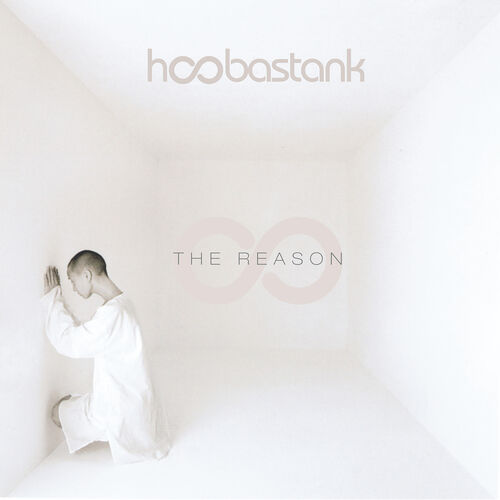

|
|
 |
 |
 |
Há duas décadas, o Hoobastank emergiu na cena musical com uma fusão distinta de rock alternativo e post-grunge. Originária de Agoura Hills, Califórnia, a banda rapidamente conquistou fãs com seu som cativante e letras introspectivas.
Desde o lançamento de seu álbum de estreia homônimo, "Hoobastank", em 2001, a banda demonstrou uma habilidade singular para criar músicas que ressoam com uma ampla audiência. Hits como "The Reason" e "Crawling in the Dark" se tornaram parte do cânone do rock moderno.
|  |
Ao longo dos anos, o Hoobastank enfrentou altos e baixos, mas sua dedicação à música e aos fãs nunca vacilou. Com uma combinação única de melodia e energia, a banda continuou a evoluir, explorando novos sons e temas em cada álbum lançado.
Sob a liderança de Doug Robb, o Hoobastank continuou a criar músicas que ressoam com uma geração de ouvintes. Seu compromisso com a autenticidade e a sinceridade em sua música os destacou como uma força duradoura na indústria musical.
Com uma base de fãs leais em todo o mundo e uma discografia diversificada, o legado do Hoobastank é verdadeiramente impressionante. E sua jornada musical está longe de terminar, pois continuam a inspirar e emocionar os ouvintes com sua música cativante e letras sinceras.